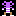
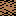
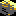
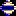
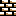
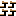
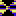
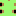

Rockford: Your hero, guide him through the caves, searching for diamonds
in order to activate the exit.
Use the arrow keys to control Rockford.
PageUp and PageDown to change level.
Escape to restart level.
 Dirt: Rockford can dig through the dirt. Most of the other creatures cannot
move through it.
 Boulder: A big rock which can easily block your way. A boulder falls
down when there's empty space beneath it, so watch out when there are boulders above you; you'll lose a life
when crushed! It is also possible for Rockford to move boulders by pushing them.
 Diamond: Very important! To complete a cave you have to find a certain
amount of diamonds.
 Wall: Walls can block Rockfords path, fortunately it is possible to blast
through them by exploding fireflies or butterflies.
Steel Wall: Also a wall, but an indestructable one.
 Magic Wall: This very special wall that converts boulders into diamonds
and vice versa. A magic wall can only be activated for a limited time.
Firefly: This is one of your enemies. You'll die when you touch it, but
you can also destroy the firefly by dropping a boulder on it. All the elements surrounding the firefly (except
a steel wall) will be destroyed as well. You can use this to blast through a brick wall. Fireflies move in a
predictable clockwise pattern along the border of empty spaces.
 Butterfly: The other enemy. Like the firefly, the butterfly is deadly
to the touch. The most important difference is that the butterfly turns to diamonds when destroyed!
Butterflies move counterclockwise along the border of empty spaces.
 Amoeba: A slimy mass, which will grow and grow. It will turn into
boulders when it grows too large, but if you enclose the amoeba by boulders or walls, then it will turn into
diamonds. Fireflies and butterflies are immediately destroyed when touching the amoeba.
Exit: This exit will be revealed when you have collected the required
number of diamonds. Now you can enter it and you are transported to the next cave, after getting some bonus
points.